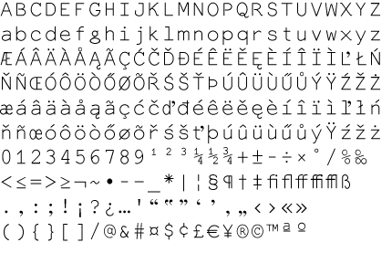

Our typefaces come in two typesets: Basic and Advanced. If not stated otherwise, our fonts include at least the “Basic” typeset. But even then, they usually cover a lot more, just not enough to qualify as “Advanced”. The overviews below are set in the typeface Everson Mono.
If you absolutely need one of our fonts which does not support your language yet, feel free to contact us. We probably can find the time to make things work for you.
Our Basic typeset covers at least all the letters you gonna need to write in english, german, french, italian and spanish, includes punctuation, numbers and some basic mathematical operators as well as some currency-signs, the @-sign and the feared ampersand. Basic also supports albanian, dutch, malagasi and probably some other languages.
The Advanced typeset includes everything from the “Basic” typeset, plus ligatures, additional stuff and support for the following languages: czech, bosnian, hungarian, latvian, lithuanian, polish, romanian, slovak, slovenian, danish, finnish, icelandic, norwegian, swedish, portuguese, turkish, irish, welsh. And then some.